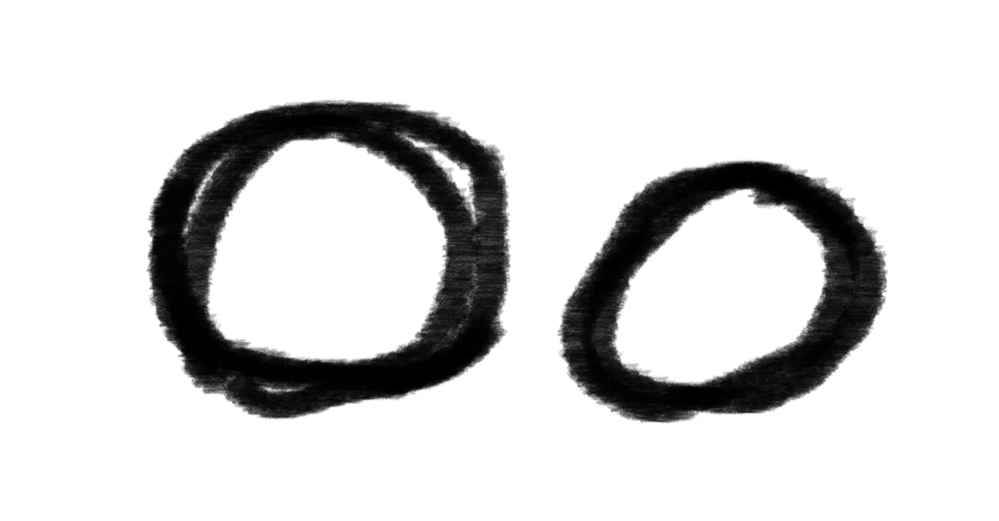
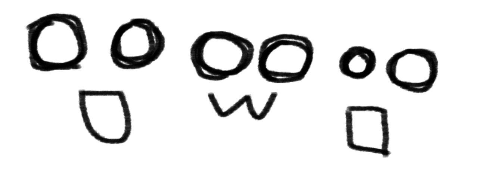
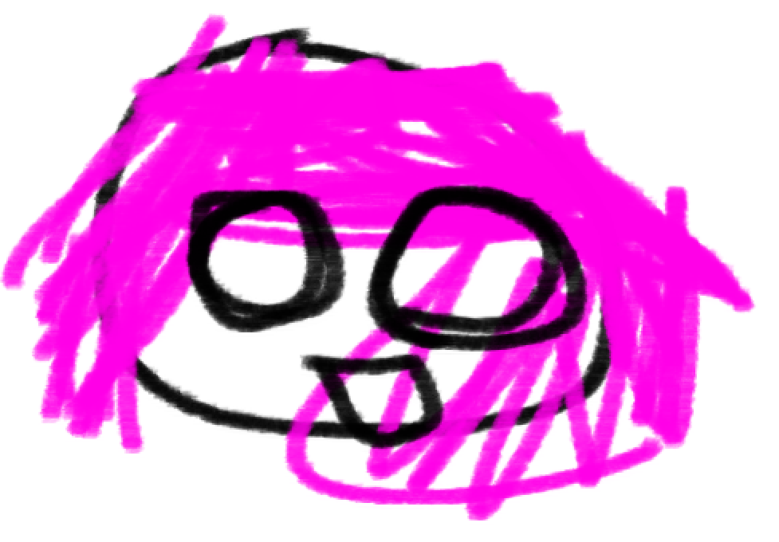
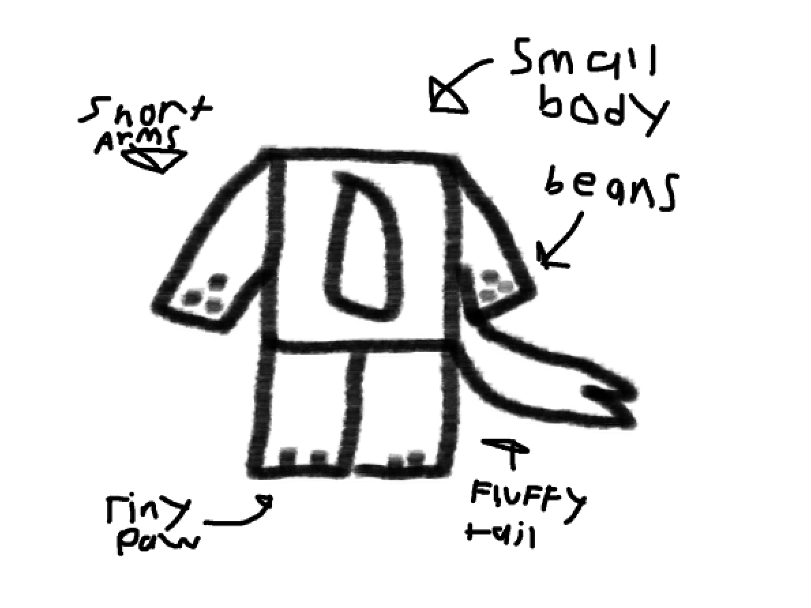
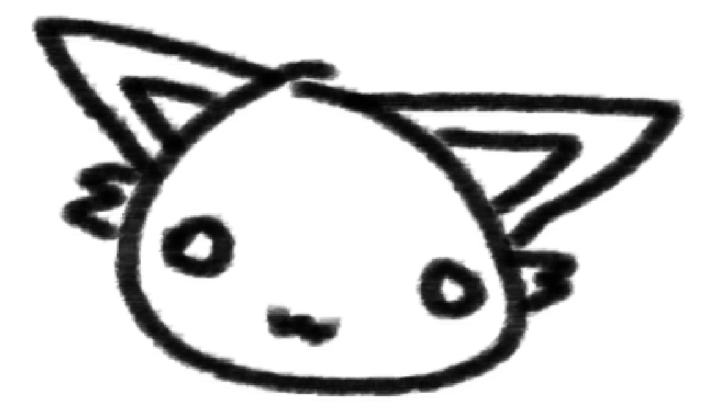
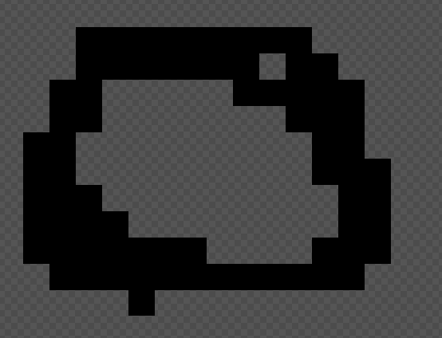
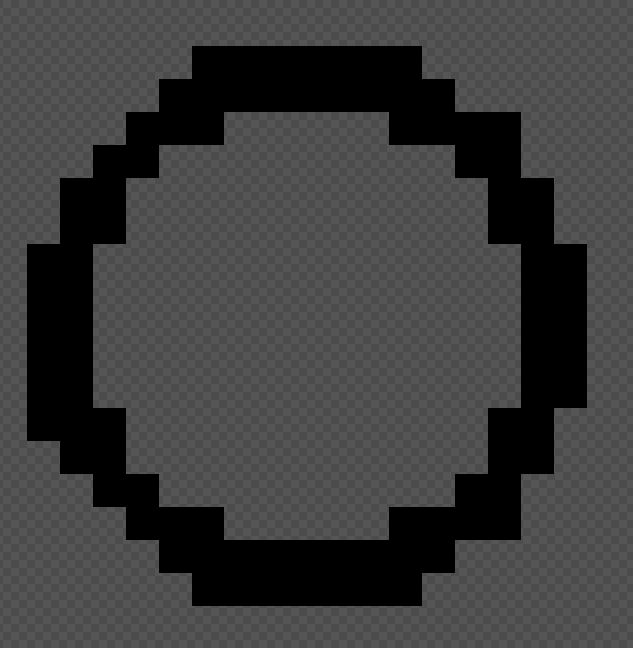
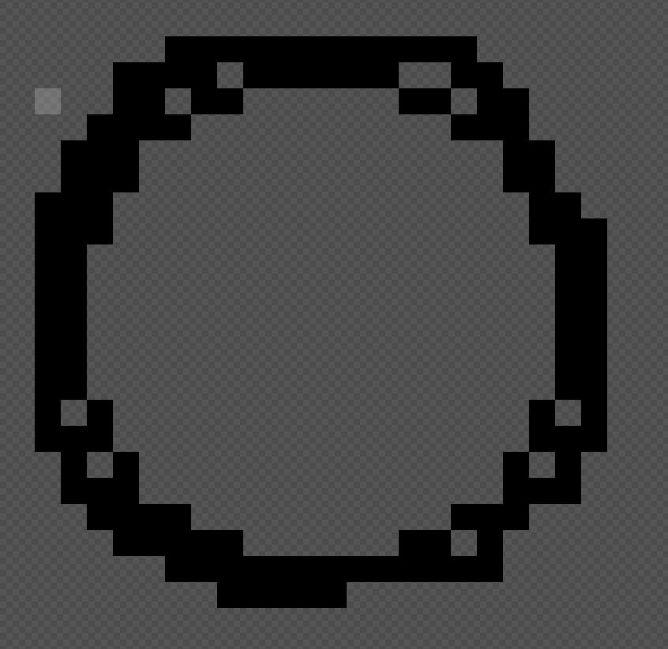

note, this video is subject to Youtube’s TOS and privacy policy. Don’t click play if you don’t agree with it!
What is my art sytle in the first place?
A lot of people say my art style is unique in some way.
For me I think it’s the same.
Just your standard emo style that a kid in a black hoodie wearing chains and knee high converse would draw in math class when they kid board of the lesson. Nothing speical. The only true speical thing about my version of it is that i combind. Elements from the video game pizza tower. Just so I can have a good mixture of emo and goofyness. Plus, I really like pizza tower!
But yet we are here. So here is my guide to it (this is mostly tips and trick to get somewhat close to mine. I HIGHY RECOMMEND watching the video above and expermenting how you should draw it! I am just providing a guide to make drawing it somewhat easier or if you want to make stuff that’s like the same stuff i made. This is not a how to, just me explaining how i do things since people get curious)
With that out of the way
HERE WE GO!!!
eyes and face
For the eyes and face what I would do is to fill in the circles and add some extra rings around them. Also leave some gaps in between Some of the lines to make it look like your drawing on paper and did it in a rush while the teacher was looking

For the mouth I would try to do a cute look of a emoticon like :D or :3 and :O etc
some examples:

Hair and stuff
Another thing is to keep the face it self on a higher layer than hair and make-up
it makes it look cool

small quick thing i drew as a example of what i mean, don’t use the hair i drew as a ref
Body
It’s hard to say what to do with the body since I don’t really do a good job with posing or making the body do stuff (I am super bad at it)
But the best thing I could say is to follow the advice of video above since i kinda do same thing.
Clothing
You can do whatever you want with clothing but a tip is to make it look cartoony and chaotic. It brings out personailty
bonus tip
try to draw in scene or emo clothing since this is what the art style was made for. But again, your the one holding the pencial. so do whatever you want. Draw them in the most colorful scene clothing or have them wear a duck costume. Up to you!
Drawing furries
If you reading this because you want to learn how to draw like all the rays/creatues in my game hazzy or want to do something like lolbit from five nights at frickbears then I have the best tips for ya

It mostly goes for the face but for body just make it small and cubby

Face
as for the face,
eyes try to keep them as far from each other to make them look dumb and have no thoughts behind that silly head
ears, make them tall and pointy and add a bit of fuff
hair: it’s optional but if you really want to add some then do something like this

and for mouth make them do that :3 or really any funny face you want.
and if you do everything correctly voila

brushes
Brushes is another common thing i get askes a lot
I use 3 differnt drawing software all for differnt use cases
I can’t say much either but I can try my best to provide the anwsers but they won’t be great
Krita
I mainly use Krita for anything but pixel art (i use piskel for that)
So for the brushes i use, I made custom ones!
I tried to make them like using a normal, chewed up, haven’t been sharpen in years pencials to truely get the drawing as a werid kid vibe. I can’t really do phycial art either due to it being hard to access
So digital is it for me
anyways i made a post on my SpaceHey explaing more of the brushes i made
But if you want the download links here
For how to import them here
If you are aiming to the 2000s MS Paint style i recommend using brush 5 aka basic-1
IbisPaint
I barely used this and only use it whenever i forgot my laptop or the Krita version of android doesn’t work
for this i use the brush used in the video above
here is the link to it
Pixel art
I use piskel but this applies to all pixel art program
but even out your pixels, don’t be sloppy
DON’T DO

BUT INSTEAD

AND WANNA GO EMO

BUT OVERALL DON’T DRAW IT S###
Ending
overall this was my tips
again, this is not a true guide. This is just how i made drawing for me easier and overall how i make my style
thanks for reading and have a great day!!1 :3